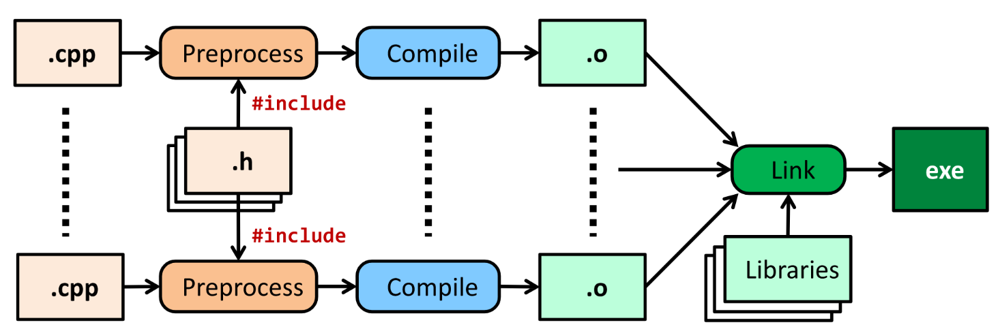
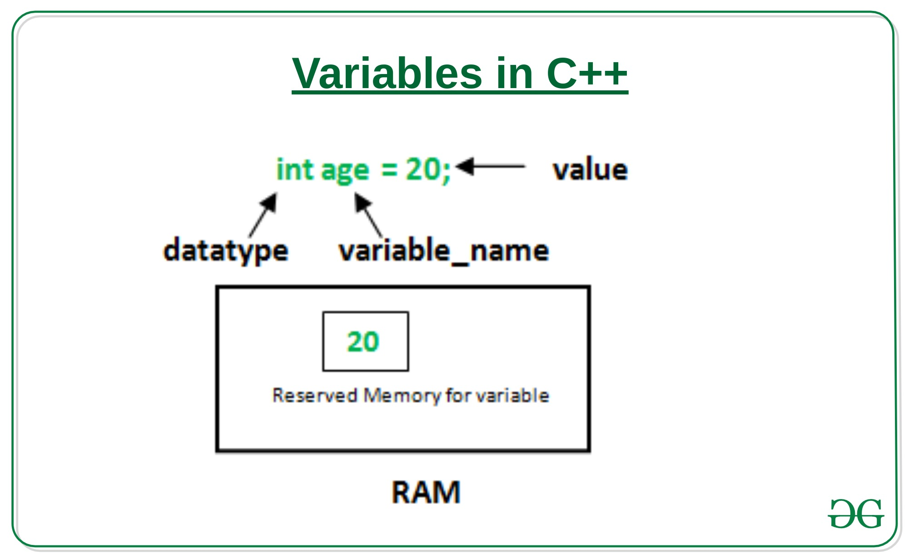
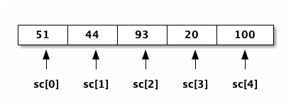
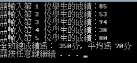
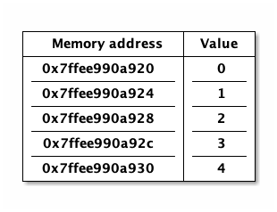
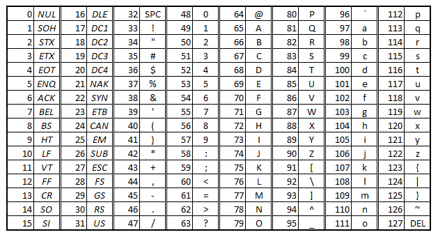

Basic Materials of C++
Table of Contents

1. Reasons Why You Should Learn Code in 2026
在 AI 快速發展的時代，很多人會問：「AI 都會寫程式了，為什麼還要學？」以下是幾個在 2026 年你仍然應該學習 coding 的理由：
1.1. AI 是乘數，不是替代品
AI 會放大你現有的能力，但如果你的程式能力是零，乘數再大結果還是零。懂 coding 的人用 AI 如虎添翼，一個工程師搭配 AI 工具，能達到過去一整個團隊的產出；不懂的人則只能當旁觀者。
1.2. Vibe Coding 有其極限
用自然語言請 AI 寫程式（所謂的 vibe coding）一開始看起來很方便，但一旦程式出錯需要 debug，不懂程式的人完全無法排查問題。能寫出程式的人很多，但能讓程式正確運作的人，才是真正有價值的。
1.3. 價值在於思考，不在於語法
你的價值不在於會寫 for loop（AI 也會寫），而在於你能思考問題、設計架構、評估取捨、抓出錯誤。這些高層次的能力，只有透過實際學習 coding 才能培養。
1.4. AI 的崛起反而需要更多懂程式的人
必須有人訓練、監督、維護 AI 系統。企業已經發現，不能只靠 AI 生成的程式碼來建構正式的產品，仍需要懂程式的人來把關品質與安全。
1.5. 培養邏輯思維與問題解決能力
寫程式迫使你把模糊的問題拆解成明確的步驟，這種思維方式不只適用於程式設計，更能運用在生活中的各種挑戰。
1.6. 賦予你創造的自主權
會寫程式就能親手打造自己想要的工具和應用，不必依賴別人、也不受限於現成方案。從無到有的創造過程，更能帶來直接的成就感。
2. 程式的編寫與執行
2.1. source code
所謂的程式碼基本上都只是一些文字檔，只是這些文字的撰寫是依照不同語言(如 C、C++、Python、R…)所規定的語法(syntax)來撰寫，以達到特定目的。
2.2. 編寫
既然程式碼只是文字檔，所以，其實我們可以很單純的以 windows 的記事本或是 MacOS 中的 TextEdit 來編寫各種語言的程式碼，只是，使用這些應用程式來編寫程式會相對辛苦，因為相對於一些專用的應用程式如 DevC++、VSCode、PyCharm 等都會提供撰寫者許多的額外功能，例如即時除錯、自動縮排、自動補完(auto complete)，甚至是後續的編譯、執行..。
2.3. 編譯與執行
既然寫完的程式碼只是文字檔，那這些文字檔要如何變成可以執行的執行檔呢？
如下圖1所示：

Figure 1: C++ Build Model
程式碼必須先經過 Preprocessing、Compilation、Linking 等步驟才能成為一支可以執行的執行檔(如 Windows 下的.exe 或是 MacOS 下的.app)。
2.4. 幾種寫程式的環境
3. C++基本架構
1: #include <iostream> 2: using namespace std; 3: 4: int main() 5: { 6: cout << "Hello world\n"; 7: return 0; 8: }
Hello world
3.1. main()
C/C++的程式由許多的 function(函式)組成，function 的基本架構如下：
傳回值類型 函式名稱() { 函式內容 retrun 傳回值 }
前述程式中的第4行開始即為一名為 main 的 function，這也是 C/C++程式最主要的一支 function，程式被執行時，就由整支程式中找出名為 main 的 function 開始執行。之後我們的程式也將依序寫在這組大括號中。
3.2. 標頭檔(Headers)
上述程式中，第1行為標頭檔(Header)的引入，這裡告訴 Compiler 說我需要用到 iostream 這個 header，原因是程式的第6行用到 cout 這個指令，而這個指令就被定義在 iostream 這個 header 中，其中的 io 即代表 input/output。
往後如果用到其他函數，也需要 include 相關的 header，例如，如果需要用到數學的開根號函式 sqrt()，就需要 include math.h 這個 header，如下例中的第1行。
1: #include <iostream> 2: #include <math.h> 3: using namespace std; 4: 5: int main() 6: { 7: cout << sqrt(100) << endl; 8: return 0; 9: } 10:
10
3.3. 命名空間(namespace)
一支程式往往會用到許多的指令、函式、變數，不同單位所開發的程式也許會用到相同的名稱來為這些函式或變數命名，如此一來就可能導致名稱的衝突。舉個例子，在一年級新生中，有三個班級裡都有個叫*陳宜君*的同學，那麼我們怎麼區分這三位同學呢？一個方式在提及這些同學時在前面加上班級，如：一年三班的陳宜君。
C++就提出這種方式來解決名稱可能衝突的問題，以下面程式為例：
1: #include <iostream> 2: int main() { 3: std::cout << "每次用到cout都指定namespace"; 4: return 0; 5: }
每次用到 cout 都指定 namespace
上例的第3中的 std::就是 C++的標準命名空間，用來說明這裡所用的 cout 是 C++預設的指令，但是如果你並沒有命名衝突的問題，其實可以一開始就直接把 namespace 設定為 std，如下面程式中的第2行。
1: #include <iostream> 2: using namespace std; 3: int main() { 4: cout << "用到cout時不用再特別指定namespace"; 5: return 0; 6: }
用到 cout 時不用再特別指定 namespace
有關於 namespace 的詳細說明，可參考簡介名稱空間以及Use a function in different file and different namespace in Visual C++這兩篇文章。
4. 輸出
顧名思意，輸出是將資料輸出到某種設備（如螢幕、印表機…）, 常見的輸出指令有 cout、printf()、puts()、putchar()等。
4.1. cout
cout 為 iostream 這個類別(class)的 object2，所以程式中若使用到 cout 就必須 include iostream。cout 可以將文字資料與變數資料列印在螢幕上，在語法上會使用<<作為文字與變數之間的連接工具，若要換行則使用“\n”或是關鍵字 endl3。
如果要輸出的是文字資料，則應該在文字的前後各加上英文的雙引號(")，如下列程式的第4行，不同類型的數值資料間要以<<間隔。
1: #include <iostream> 2: using namespace std; 3: int main() { 4: cout << "Hello world\n"; 5: cout << "半徑：" << 3 << endl; 6: cout << "圓面積：" << 3*3*3.1416 << "\n"; 7: return 0; 8: }
Hello world 半徑：3 圓面積：28.2744
4.2. printf()
printf()為定義在 stdio.h 中的一個 function，所以若用到 printf()就要 include stdio.h。
和 cout 一樣，printf()一樣是用來進行資料的輸出，只是在輸出時提供了更多的格式選定選項。基本的應用如下例，更複雜的應用則在介紹完變數(vairalbe)概念後再行說明。
1: 2: #include <stdio.h> 3: using namespace std; 4: int main() { 5: printf("Hello world\n"); 6: printf("半徑：%d\n", 3); //%d表示在該處要顯示/輸出一個整數 7: printf("圓面積：%.2f\n", 3*3*3.1416); //%.2f: 表示在該處要顯示/輸出一個小數，精確度達到小點點後第二位 8: return 0; 9: }
Hello world 半徑：3 圓面積：28.27
- float v.s. double
在 C++ 中，使用 printf() 函數輸出 double 或 float 變數時，可以使用格式化字符串指定輸出的格式。對於 float 和 double 變數，常用的格式化符號是 %f 或 %lf。
- %f：用於輸出 float 或 double 型別的變數。
- %lf：雖然在 C 語言中 %lf 是用來輸出 double 的格式，但在 C++ 的 printf() 函數中，%f 和 %lf 是等效的，因為 printf() 不區分 float 和 double，它們都會被轉換為 double 進行處理。
1: #include <iostream> 2: 3: int main() { 4: float a = 3.14159f; 5: double b = 2.718281828459; 6: 7: // 使用 printf() 輸出 float 和 double 8: printf("float 變數 a = %f\n", a); 9: printf("double 變數 b = %f\n", b); 10: 11: // 限制小數點後兩位 12: printf("float 變數 a (兩位小數) = %.2f\n", a); 13: printf("double 變數 b (兩位小數) = %.2f\n", b); 14: 15: return 0; 16: }
- %f：用於輸出 float 或 double 型別的變數。
4.3. 跳脫字元
如果你試過利用 C++來輸出下列這段話：
他說：“好”，然後他就死了。
你會發現這是件困難的事，在前節的 cout 中，我們提及雙引號是用來將文字括起來的符號，若在字串中也出現雙引號，則勢必會打亂雙引號在文字中的規則。要輸出這類特殊字元的問題，有以下兩種方法：
- cout + 單引號
以兩個單引號將雙引號括起來，如下列程式。
1: #include <iostream> 2: using namespace std; 3: int main() { 4: cout << "他說："<< '"' << "好" << '"' << "，然後他就死了。\n"; 5: }
他說："好"，然後他就死了。
- 加上跳脫字元
即，在字串中的雙引號前加上\，變成\"，如下
1: #include <iostream> 2: using namespace std; 3: int main() { 4: cout << "他說：\"好\"，然後他就死了。\n"; 5: }
他說："好"，然後他就死了。
常用的跳脫字元還有以下幾類：
字元 意義 \’ 單引號 \" 雙引號 \\ 反斜線 \0 空字元(NULL) \t 定位字元(TAB) \n 換行字元(ENTER)
5. Variable
5.1. 關於變數
A variable is a name given to a memory location. It is the basic unit of storage in a program4.
- The value stored in a variable can be changed during program execution.
- A variable is only a name given to a memory location, all the operations done on the variable effects that memory location.
- In C++, all the variables must be declared before use.
5.2. 變數的宣告與應用
變數是資料的標籤，而非資料本身。電腦程式很大一部分是在操作資料，變數在本質上是用來操作資料的一種語法特性。5

Figure 2: Variables in C++
C 語言的變數宣告語法如下：
變數類型 變數名稱[=初值];
以下列程式為例，第4行宣告了一個名為 r 的整數型態(int)變數，這意謂著向記憶體要了塊足以儲存整數資料的空間，並將之命名為 r，並在第6將整數 5 存入這個空間中，爾後只要在程式中提及 r，指的便是 5 這個值。這裡的等號運算子其作用為指定(assign)，即是將等號*右邊*的值存入等號*左邊*的變數(空間)中。
在第5行宣告了一個名為 cirArea 的小數變數，接下來在第7行先計算出圓面積的值，再把這個值存入這個小數變數空間中。
1: #include <iostream> 2: using namespace std; 3: int main() { 4: int r; 5: double cirArea; 6: r = 5; 7: cirArea = r * r * 3.1416; 8: cout << "圓面積：" << cirArea << endl; 9: }
圓面積：78.54
5.3. 變數的命名規則
- 可用字母、數字、底線。
- 第一個字不可為數字，如 1x, 2x…，可以為 x1, x2…。
- 名稱間不可有空白。如 student no，可以 student_Id 或是 studentId 取代。
- 大小寫有別(Case-Sensitive): a 與 A 為兩個不同的變數。
- 不可使用關鍵字(如 int, double, if, while…)。
- 底線開頭接大寫字母應保留給系統使用。
更詳細的命名規範與建議可參閱：C語言中變數名及函式名的命名規則與駝峰命名法。
5.4. 變數類型
前節介紹了變數的宣告要先說明其類型，根據要儲存的資料種類不同，C++變數有許多型態。以下是一些常用的基本型態6：
| 型態 | 中文意思 | 英文字義 | 可儲存的資料 |
| int | 整數 | Integer | 100、-5、1246 … |
| float | 32 bit 單精浮點數(小數) | single precision floating point | 3.14159、4.3、-1.1 … |
| double | 64 bit 倍精浮點數(小數) | double precision floating point | 3.14159、4.3、-1.1 … |
| char | 字元(半形字) | Character | ’a’、’R’、’1’、’@’、’*’ … |
| string | 字串(文句) | String | “Hello”、“^_^”、“Rock!” … |
| bool | 布林(是非) | boolean | true、false |
關於 float 與 double 的進一步說明，可參閱：float跟double小知識。
5.5. 變數的極限
- 範例
1: #include <iostream> 2: #include <float.h> 3: using namespace std; 4: int main() { 5: cout << INT_MIN << endl; 6: cout << INT_MAX << endl; 7: cout << LONG_MIN << endl; 8: cout << LONG_MAX << endl; 9: cout << DBL_MIN << endl; 10: cout << DBL_MAX << endl; 11: }
-2147483648 2147483647 -9223372036854775808 9223372036854775807 2.22507e-308 1.79769e+308
- 詳細內容：
6. 輸入
6.1. 變數的輪入
前節提及變數的宣告、指定內容以及輸出變數，然而在程式內容中指定變數值實在很沒有彈性，我們可以透過輸入(cin)的方式將指定變數值的時機延後到程式執行時，由使用者來指定，例如：
1: #include <iostream> 2: using namespace std; 3: int main() { 4: double r; 5: double area; 6: cin >> r; 7: area = r * r * 3.14; 8: cout << "半徑 " << r << "的圓，其面積為: " << area << "\n"; 9: }
程式在執行至第6行中的 cin 時會暫停，等待使用者自鍵盤輸入一數值，並將該數值存入變數 r 中，接下來再以這個 r 來計算圓面積(第7行)，最後輸出其面積。
7. 運算式
7.1. 指定運算
最基本的運算子為=(assign)，即，將資料(數值、字元或字串)存入某變數空間中，如:
1: #include <iostream> 2: using namespace std; 3: int main() { 4: int x, y, z; 5: x = 3; 6: y = 4; 7: z = x + y; 8: cout << z << endl; 9: x = 10; 10: z = x + y; 11: cout << z << endl; 12: } 13:
7 14
指定運算除了可以將其他變數的計算結果存入變數中(如上述程式中的第7、10行)外，也可以將變數本身的值再運算後存回來，如：
1: #include <iostream> 2: using namespace std; 3: int main() { 4: int x; 5: x = 3; 6: cout << x << endl; 7: x = x + 1; 8: cout << x << endl; 9: x++; // 同x = x + 1 10: cout << x << endl; 11: x = x * 3; 12: cout << x << endl; 13: } 14:
3 4 5 15
如同5.2所述:
等號運算子其作用為指定(assign)，即是將等號*右邊*的值存入等號*左邊*的變數(空間)中
，上述程式中的第7行是先求出 x+1 的值(4)，再將這個值存回變數 x 中，這個運算也可以第9取代；同理，程式中的第11行是先將 x 的值乘以 3，再把結果存回變數 x 中。
7.2. 數值運算
C/C++的基本數值運算有+、-、*、/、%，最後的%為取餘數。
1: #include <iostream> 2: using namespace std; 3: int main() { 4: int x = 10, y = 3; 5: cout << x + y << endl; 6: cout << x - y << endl; 7: cout << x * y << endl; 8: cout << x / y << endl; 9: cout << x % y << endl; 10: }
13 7 30 3 1
此處須留意的是第8行的值為整除的結果(得到商)，因為 x 與 y 均為整數，故此處的/為整除；此外，第9的%運算僅能用於 x 與 y 均為整數的狀況，在 C/C++中，小數不允許有取餘數的運算(python 可以)。
數除運算也可以結合小括號來進行更複雜的運算，如：
1: //... 2: int t = 10; 3: double up = 10.3; 4: double bt = 20.4; 5: double height = 15; 6: double area; 7: area = ((up + bt) * height / 2) * 10; 8: // ...
此處須留意，小刮號可以層層相叠，但不能像數學式那樣最內層為小括號、然後是中刮號、大刮號…
- 進階運算
C++也提供一些較複雜的數學運算如開根號、log、或是 sin、cos 等，但使用時必須 include 函式庫(math.h)
- 開根號
1: #include <iostream> 2: #include <stdio.h> 3: #include <math.h> //一定要匯入 4: using namespace std; 5: 6: int main() { 7: int n; 8: double ans; 9: n = 10; 10: ans = sqrt(n); 11: cout << ans << endl; 12: printf("%.2f\n", ans); 13: }
3.16228 3.16
- 開根號
7.3. 關係運算
即，比較兩個值(或運算式)的結果，可的關係運算子如下：
| 關係運算子 | 意義 | 使用範例 | 範例運算結果 |
| == | 等於 | 1+1 == 2 | 1 |
| != | 不等於 | 3 != 4 | 1 |
| > | 大於 | 5 > 7 | 0 |
| >= | 大於等於 | 3 >= 5 | 0 |
| < | 小於 | 2 < 6 | 1 |
| <= | 小於等於 | 8 <= 8 | 1 |
7.4. 條件運算
上述關係運算所得的條件值(true/false)也可以再進行運算，而運算的結果也只有兩類: true/false。最基本的條件運算有以下三項：
- &&, and
且，只有在兩項條件均成立時其運算結果才是 true，否則其結果為 false，如
1: #include <iostream> 2: using namespace std; 3: int main() { 4: int x = 3; 5: int y = 4; 6: cout << (x >= 3 && y >= 0) << endl; 7: cout << (x == 3 && y > 4) << endl; 8: }
1 0
- ||, or
1: #include <iostream> 2: using namespace std; 3: int main() { 4: int x = 3; 5: int y = 4; 6: cout << (x >= 3 || y < 0) << endl; 7: cout << (x != 3 && y > 14) << endl; 8: }
1 0
- !, not
1: #include <iostream> 2: using namespace std; 3: int main() { 4: int x = 3; 5: int y = 4; 6: cout << !(x >= 3) << endl; 7: cout << !(x == 3 && y > 4) << endl; 8: }
0 1
如果數值運算，條件運算也結合小刮號進行更複雜的計算。
8. if 條件判斷
if 判斷式可用來判斷條件是否成立，並且依照條件之成立與否，來執行不同的程式碼7。依照條件的複雜程度可大致分為以下三類：
8.1. 單一條件
8.2. 條件運算(條件的組合)
在前節的範例中，我們看到的是最簡單的條件，如
1: if (score >= 60) { 2: ... 3: }
然而，更多時候我們要處理的是多種條件的組合，例如：輸入一分數，若所輸入的分數不合理(大於 100 或小於 0)，則輸出“請重新輸入”。雖然我們可以利用以下的寫法來解決問題：
1: #include <iostream> 2: using namespace std; 3: int main() { 4: int score; 5: score = -19; 6: if (score < 0) { 7: cout << "請重新輸入\n"; 8: } 9: if (score > 100) { 10: cout << "請重新輸入\n"; 11: } 12: }
但更適合的是利用條件運算來處理問題，如下：
1: #include <iostream> 2: using namespace std; 3: int main() { 4: int score; 5: score = -19; 6: if ((score < 0) || (score > 100)) { 7: cout << "請重新輸入\n"; 8: } 9: }
請重新輸入
上述的||即為條件運算子，代表 OR。
C++的條件運算子列表如下：
| 運算子 | 名稱 | 範例 | 說明 |
| && | AND | ( 條件 1 && 條件 2) | 當條件 1、2 皆成立時才算成立 |
| || | OR | ( 條件 1 || 條件 2) | 只要條件 1、2 有一項成立就算成立 |
| ! | Not | !（條件 1) | 當條件 1 不成立時就成立 |
8.3. 雙重條件
- 語法
若條件的可能性可分為兩類，則可使用如下 if..else..的條件式，即:
- 當條件成立，則執行程式碼一，
- 否則(若條件不成立)，則執行程式碼二。
if (條件) { 程式碼一; } else { 程式碼二; }
- 當條件成立，則執行程式碼一，
- 範例
若分數及格，則輸出 PASS，否則輸出 FAIL
1: #include <iostream> 2: using namespace std; 3: int main() { 4: int score; 5: score = 57; 6: if (score >= 60) { 7: cout << "PASS\n"; 8: } else { 9: cout << "FAIL\n"; 10: } 11: }
FAIL
- 課堂練習
8.4. 巢狀條件
上節中提及若 if 後的件條成立，則執行大括號中的程式碼，此段程式碼也可以是 if 條件本身，如：
- 語法
if (條件1) { 程式碼...; if (條件2) { 程式碼...; } 程式碼...; } else { 程式碼...; }
- 範例
1: #include <iostream> 2: using namespace std; 3: int main() { 4: int pass; 5: cin >> pass; 6: bool userIsAdmin = true; 7: if (pass == 1234) { 8: if (userIsAdmin == true) { 9: cout << "管理者，有root權限"; 10: } else { 11: cout << "為一般使用者，權限有限"; 12: } 13: } else { 14: cout << "輸入密碼錯誤"; 15: } 16: }
- 課堂練習
8.5. 多重條件
- 語法
- 當要判斷的條件可能性超過兩種，則可以用如下的 if..else if..條件式，即，
- 當條件一成立，則執行程式碼一；
- 若條件一不成立，則繼續判斷條件二，若條件二成立，則執行程式碼二；
- 若條件二也不成立，則繼續判斷條件三…依此類推。
- 最後的 else(第else行則可有可無，若有，則表示如果以上所有條件皆不成立，則執行程式碼 N。
if (條件一) { 程式碼一; } else if (條件二) { 程式碼二; } else if (條件三) { 程式碼三; } ... { } else { (else) 程式碼N }
- 當要判斷的條件可能性超過兩種，則可以用如下的 if..else if..條件式，即，
- 範例
將分數轉成等第(A, B, C…)
1: #include <iostream> 2: using namespace std; 3: int main() { 4: int score = 79; 5: if (score >= 90) { 6: cout << "A\n"; 7: } else if (score >= 80) { 8: cout << "B\n"; 9: } else if (score >= 70) { 10: cout << "C\n"; 11: } else if (score >= 60) { 12: cout << "D\n"; 13: } else { 14: cout << "F\n"; 15: } 16: }
C
9. For Loops
計算機的優勢除了運算速度之快，更重要的是它十分適合拿來做一些重複性極高的工作，例如，幫所有同學計算月考平均、幫全國所有家庭計算須繳所得稅….，For 迴圈即是許多語言用來執行重複工作的指令。
9.1. 語法 1 (要重複的程式碼只有一行時)
1: for (初始值; 條件式; 更新值) 程式碼;
9.2. 語法 2 (要重複一行以上程式碼時)
1: for (初始值; 條件式; 更新值){ 2: 程式碼一; 3: 程式碼二; 4: ... 5: }
初始值 是進入迴圈一開始會執行的動作，而 更新值 則是執行完每次的迴圈要執行的動作，至於重複的次數則取決於 條件式 是否成立，只要 條件式 一直成立(其計算結果為 true)，則持續重複執行程式碼；所以要利用 更新值 來逐步修正，讓條件值有機會傳回 false。
9.3. 範例
1: #include <iostream> 2: using namespace std; 3: 4: int main() { 5: for (int i = 1; i < 10; i++) { 6: cout << "3 * " << i << " = " << 3*i << endl; 7: } 8: return 0; 9: }
3 * 1 = 3 3 * 2 = 6 3 * 3 = 9 3 * 4 = 12 3 * 5 = 15 3 * 6 = 18 3 * 7 = 21 3 * 8 = 24 3 * 9 = 27
以上述程式為例，其程式執行的步驟如下：
9.4. 練習
- 輸入 n，輸出所有小於 n 的偶數．
- 輸入 n，輸出所有小於 n 且可被 17 整除的數．
- 輸入一數 N，輸出 1+2..+N
9.5. 旗標變數
有時我們希望能在迴圈的過程中判斷「某事是否曾發生過」，例如，「是否曾發現某數的因數？」、「連續輸入 N 個分數，判斷這 N 個分數中是否至少有一科不及格？」這是我們的思考方式就要稍做轉變。
- 例題
小明買了 N 張單碼彩卷，問是否全部摃龜，若這 N 張彩卷中至少有一張中奬(號碼=77)，則輸出“NOT BAD”，否則輸出“QQ”。
- 想法 1
面上述要求，for 迴圈的初學者可能會想在 for 中直接判斷中奬與否，如下:
1: #include <iostream> 2: using namespace std; 3: int main() { 4: int n; 5: cin >> n; 6: int x; 7: for (int i = 1; i <= n; i++) { 8: cin >> x; 9: if (x == 77) { 10: cout << "NOT BAD\n"; 11: } else { 12: cout << "QQ\n"; 13: } 14: } 15: }
QQ NOT BAD QQ
由上述結果可以發現，這並不是正確答案，很顯然應該把輸出判斷放在 for 的後面，那，要如何做到這點呢？
- 想法 2
另一種做法是，我們可以在 for 裡去計算中奬的次數，等到全部輸入完畢後，最後再統計一共有幾張中奬，這樣就可以解決上述問題：
1: #include <iostream> 2: using namespace std; 3: int main() { 4: int n; 5: cin >> n; 6: int x; 7: int numOfWins = 0; 8: for (int i = 1; i <= n; i++) { 9: cin >> x; 10: if (x == 77) { 11: numOfWins++; 12: } 13: } 14: if (numOfWins > 0) { 15: cout << "NOT BAD\n"; 16: } else { 17: cout << "QQ\n"; 18: } 19: }
NOT BAD
回顧一下這個做法，其實我們會發現我們到最後根本不在乎有幾張彩卷中奬，我們只在乎有沒有中過奬，即，對我們而言，numOfWins 其實只有兩種值:
- 0
- 大於 0
既然如此，其實以 boolean 變數來表示它會更為恰當。
- 0
- 想法 3
1: #include <iostream> 2: using namespace std; 3: int main() { 4: int n; 5: cin >> n; 6: int x; 7: bool iWin = false; 8: for (int i = 1; i <= n; i++) { 9: cin >> x; 10: if (x == 77) { 11: iWin = true; 12: } 13: } 14: if (iWin) { 15: cout << "NOT BAD\n"; 16: } else { 17: cout << "QQ\n"; 18: } 19: }
NOT BAD
這裡的 iWin 就是典型的 Flag variable。
10. Nested For Loop
10.1. 語法
1: for (初始值1; 條件式1; 更新值1) { 2: ... 3: for (初始值2; 條件式2; 更新值2) { 4: 程式碼一; 5: 程式碼二; 6: ... 7: } 8: ... 9: }
10.2. 範例
11. While
11.1. While
- 語法
1: while( 條件式1 ) { 2: 程式碼1; 3: 程式碼2; 4: }
while 與 for 均為重複結構，比較起來，while 的語法結構更為簡單，但撰寫者要自行處理的事也更多一些。上述語法的執行流程為:
- 若 while 後的 條件 1 成立，則執行一次大括號內的所有程式碼
- 回到 1.
由上述結構也可以看出，我們必須想辦法讓 條件 1 有機會不成立，否則這個 while 迴圈就會一直重複下去。
- 若 while 後的 條件 1 成立，則執行一次大括號內的所有程式碼
- 範例 1
以 while 模擬 for loop
1: ##include <iostream> 2: using namespace std; 3: int main(int argc, char *argv[]) { 4: int i; 5: 6: while (i<= 5) { 7: cout << "This is a while test\n;" 8: i++; 9: } 10: 11: return 0; 12: }
- 範例 2
九九乘法表
1: #include <iostream> 2: using namespace std; 3: 4: int main() { 5: int i = 9; 6: while (i > 0) { 7: cout << "3 * " << i << " = " << 3*i << endl; 8: i--; 9: } 10: return 0; 11: }
3 * 9 = 27 3 * 8 = 24 3 * 7 = 21 3 * 6 = 18 3 * 5 = 15 3 * 4 = 12 3 * 3 = 9 3 * 2 = 6 3 * 1 = 3
- 課堂練習
- 輸入一整數 n，輸出\(\)\(\sum{n}\)，以 while 完成。
- 輸入一整數 n，輸出\(\)\(\sum{n}\)，以 while 完成。
11.2. 不固定次數的重複
有些時候你想重覆執行某些動作，但是你又不確定會重覆多少次，典型的例子是輸入密碼，輸入錯誤後就應該重新輸入，作為系統設計者，你不會知道使用者會在第幾次輸入正確密碼，這就是 while 適合上場的時機….，例如:
1: 輸入密碼; 2: while(密碼錯誤) 3: { 4: 輸入密碼; 5: }
11.3. Do … while
有些狀況下，重複的次數 至少 要發生一次才行，例如前節中的密碼檢查，使用者至少要先輸入一次密碼，接下來系統才能針對密碼進行驗證，此時，do..while 會是一個比較理想的重複架構，其語法如下：
1: do { 2: 輸入密碼 3: } while (密碼錯誤);
比起前一節的 while，是不是更為精簡了呢….
12. Array
直至目前為止，我們學過宣告變數來儲存數值(int, double)，如果今天要計算全班資訊科成績平均(5 人)，也許我們可以用如下方式來計算:
1: int main(int argc, char *argv[]) { 2: int cs1, cs2, cs3, cs4, cs5; 3: std::cin >> cs1 >> cs2 >> cs3 >> cs4 >> cs5; 4: 5: double avg; 6: avg = (cs1 + cs2 + cs3 + cs4 + cs5) / 5.0; 7: 8: std::cout << avg << endl; 9: return 0; 10: }
but….如果全班有 50 個人呢？如果是要求全校的成績分佈呢?
各種程式語言為了因應這種大批資料的處理計算，都會有相對應的資料結構，C++的陣列(array)就是用來儲存大量資料的結構。
12.1. 基本操作
- 宣告
如果變數一樣，array 也要先宣告才能使用，其宣告方式如下：
1: 資料型態 名稱[長度];
其中陣列長度必須為一編譯時期的常數，例如:
1: int number[10]; // 宣告 10 個元素的整數陣列 2: double score[10]; // 宣告 10 個元素的浮點數陣列 3: char ascii[10]; // 宣告 10 個元素的字元陣列
或是
1: int numOfStudent; 2: cin >> numOfStudent; //先確認人數 3: int score[numOfStudent];
- Assign value to Array
- assign
1: int sc[5]; 2: sc[0] = 51; 3: sc[1] = 44; 4: sc[2] = 93; 5: sc[3] = 20; 6: sc[4] = 100;
上述程式的執行結果如下所示：

Figure 3: 陣列儲存值(value)與 index 的關係
如上所示，宣告一陣列 sc，每個 int 並列儲存於陣列中，以 index 值(0~4)做為存取依據，因為 index 值為連續整數，所以我們可以很方便的套用 for-loop 來存取陣列內容,例如：
1: for (i = 0; i < 5; i++) { 2: cout << sc[i] << endl; 3: }
- 宣告時順便指定陣列初值
1: int score[5] = {51, 44, 93, 20, 100};
- cin
1: int sc[5]; 2: for (i = 0; i < 5; i++) { 3: cin >> sc[i]; 4: }
- 課堂練習
- 先輸入全班人數 N，接下來輸入 N 位學生的成績，存入一維陣列中，計算總分、平均。已知學生人數不超過 50 人。執行畫面需如下所示：

- 輸出上例中全班人數最高分之分數。
- 可以直接複製貼上以下的測資
5 85 53 94 38 80
- 先輸入全班人數 N，接下來輸入 N 位學生的成績，存入一維陣列中，計算總分、平均。已知學生人數不超過 50 人。執行畫面需如下所示：
12.2. 其他類型的陣列
1: char ascii[5] = {'A', 'B', 'C', 'D', 'E'}; //字元陣列 2: bool flag[5] = {false, true, false, true, false};
12.3. 更方便的 for array
C++ 11 提供了 for range 語法，可用於循序走訪陣列的任務
1: #include <iostream> 2: using namespace std; 3: 4: int main() { 5: int number[5] = {0, 1, 2, 3, 4}; 6: 7: for(auto n : number) { 8: cout << n << " "; 9: } 10: cout << endl; 11: 12: return 0; 13: }
0 1 2 3 4
12.4. index 為何由 0 開始?
陣列索引值由 0 開始不是沒有原因的，陣列名稱儲存了陣列記憶體的首個位置的位址，我們可以由底下的程式碼看出陣列開頭的位址：
1: #include <iostream> 2: using namespace std; 3: 4: int main() { 5: int number[5] = {0, 1, 2, 3, 4}; 6: 7: cout << begin(number) << endl; 8: 9: return 0; 10: }
0x7ffee990a920
此時，索引值表示陣列元素是相對於陣列首個記憶體位址的位移量（offset），位移的量與資料型態長度有關，如果是 int 整數，每次位移時是一個 int 整數的長度，例如在上例中 number[0] 索引值為 0 時，表示位移量為 0，自然就是指第一個元素，而 number[9] 就是指相對於首個元素的位移量為 9。8
- 觀察程式執行結果，你有看出來一個 int 會佔用多大的空間嗎？
- 請你複製這段程式碼，將 int 改為 double，再看看一個 double 會佔用多少空間？
- 你要如何測試 char, boolean 的佔用空間？
1: #include <iostream> 2: using namespace std; 3: 4: int main() { 5: int number[5] = {0, 1, 2, 3, 4}; 6: 7: for(auto offset = begin(number); offset != end(number); offset++) { 8: auto n = *offset; 9: cout << offset << ": " << n << endl; 10: } 11: cout << endl; 12: 13: return 0; 14: }
0x7ffee990a920: 0 0x7ffee990a924: 1 0x7ffee990a928: 2 0x7ffee990a92c: 3 0x7ffee990a930: 4
上述程式中的 offset 為指標變數，其型代為 int*，代表記憶體的位址，若要取得該位址中的值，則以*offset 表示。若以圖形表示則為：

Figure 4: 陣列的記憶體位址(address)與儲存值(value)對照圖
12.5. YES/NO for Array
- what you should not do with array
對一般變數，我們可以用以下 assign 方式將其值 assign 給其他變數：
1: int a = 20; 2: int b; 3: b = 20;
但是 array 不允許上述操作，如：
1: int ary1[5] = {0, 1, 3, 4, 5}; 2: int ary2[5]; 3: ary2 = ary1; //錯誤!!
如果要將某一陣列指定給另一個變數，只能透過迴圈逐一 assign:
1: int ary1[5] = {0, 1, 3, 4, 5}; 2: int ary2[5]; 3: for (i = 0; i < 5; i++) { 4: ary2[i] = ary1[i]; 5: }
- what you can do with array:
- sort #1
1: #include <algorithm> 2: #include <iostream> 3: using namespace std; 4: int main() { 5: int number[] = {30, 12, 55, 31, 98, 11}; 6: // 排序寫法1 7: sort(begin(number), end(number)); 8: for (int i = 0; i <= 5; i++) { 9: cout << number[i] << ","; 10: } 11: }
11,12,30,31,55,98,
- sort #2
1: //輸入: 30 11 13 100 8 2: #include <algorithm> 3: #include <iostream> 4: using namespace std; 5: int main() { 6: int number[20]; 7: for (int i = 0; i < 5; i++) { 8: cin >> number[i]; 9: } 10: // 排序寫法2 11: sort(number, number + 5); 12: 13: for (int i = 0; i < 5; i++) { 14: cout << number[i] << ","; 15: } 16: }
8,11,13,30,100,
- find
1: #include <algorithm> 2: #include <iostream> 3: using namespace std; 4: int main() { 5: int number[] = {30, 12, 55, 31, 98, 11}; 6: 7: cout << "輸入搜尋值："; 8: int search = 0; 9: cin >> search; 10: 11: int* addr = find(begin(number), end(number), search); 12: cout << (addr != end(number) ? "找到" : "沒有") 13: << "搜尋值" 14: << endl; 15: }
- reverse
1: #include <algorithm> 2: #include <iostream> 3: using namespace std; 4: int main() { 5: int number[] = {30, 12, 55, 31, 98, 11}; 6: // 反轉 7: reverse(begin(number), end(number)); 8: }
13. 排序
陣列(array)是用來儲存大量資料的結構，儲存資料的目的之一是為了日後能方便的找到所需的資料，然而，若資料是雜亂無章的排列，則搜尋起來就會相當沒有效率。
想像一個情境，你有一疊沒有排序的名片，當你想找某個人的名片時，你只能一張一張的翻閱，直到找到為止，這樣的搜尋方式稱為「線性搜尋(linear search)」，其時間複雜度為 O(n)，也就是說，若有 n 張名片，最壞的情況下你可能要翻閱 n 張名片才能找到目標（換句話說，你要找的名片可能是最後一張），或者，你全部找完後才發現根本沒有你要找的名片。
為了提升搜尋效率，我們可以先將名片依照某種規則排序，例如依照姓名的字母順序排列，這樣當我們要找某個人的名片時，就可以利用「二分搜尋(binary search)」的方式來進行搜尋，其時間複雜度為 O(log n)，也就是說，若有 n 張名片，最壞的情況下你只需要翻閱 log n 張名片就能找到目標（log n 是以 2 為底的對數函數）。
然而，要進行二分搜尋的前提是資料必須是已排序的，這就引出了排序演算法的需求。
排序演算法有很多種，常見的有以下幾種：
- 氣泡排序(Bubble Sort)
- 選擇排序(Selection Sort)
- 插入排序(Insertion Sort)
- 快速排序(Quick Sort)
- 合併排序(Merge Sort)
每種排序演算法都有其優缺點，選擇適合的排序演算法取決於資料的特性以及應用場景。
13.1. 氣泡排序(Bubble Sort)
氣泡排序是一種簡單但效率較低的排序演算法，其基本思想是 * 反覆比較相鄰的元素* ，若順序錯誤則交換位置，直到整個陣列有序為止。
- 第一輪比較
假設有一個陣列 [5, 2, 9, 1, 5, 6]，我們想以氣泡排序將其排序，第一輪的步驟如下：
- 比較第一對元素 5 和 2，因為 5 > 2，交換位置，陣列變為 [2, 5, 9, 1, 5, 6]
- 比較第二對元素 5 和 9，因為 5 < 9，不交換位置，陣列保持不變
- 比較第三對元素 9 和 1，因為 9 > 1，交換位置，陣列變為 [2, 5, 1, 9, 5, 6]
- 比較第四對元素 9 和 5，因為 9 > 5，交換位置，陣列變為 [2, 5, 1, 5, 9, 6]
- 比較第五對元素 9 和 6，因為 9 > 6，交換位置，陣列變為 [2, 5, 1, 5, 6, 9]
- 重複上述步驟，直到整個陣列
看到了嗎？全部有6個元素，所以第一輪需要比較5次，比完第一輪後，最大的元素 9 已經被移到最後一個位置。
上面第一輪的比較過程可以用如下的程式碼來實現：
1: #include <iostream> 2: using namespace std; 3: int main() { 4: int arr[] = {5, 2, 9, 1, 5, 6}; 5: int n = sizeof(arr) / sizeof(arr[0]); 6: 7: // 第一輪比較 8: for (int i = 0; i < n - 1; i++) { 9: if (arr[i] > arr[i + 1]) { 10: // 交換位置 11: int temp = arr[i]; 12: arr[i] = arr[i + 1]; 13: arr[i + 1] = temp; 14: } 15: } 16: 17: // 輸出結果 18: for (int i = 0; i < n; i++) { 19: cout << arr[i] << " "; 20: } 21: cout << endl; 22: 23: return 0; 24: }
2 5 1 5 6 9
- 比較第一對元素 5 和 2，因為 5 > 2，交換位置，陣列變為 [2, 5, 9, 1, 5, 6]
- 第二輪比較
接下來進行第二輪比較，因為最大的元素已經在最後一個位置，所以我們只剩下前五個元素需要比較，步驟如下：
- 比較第一對元素 2 和 5，因為 2 < 5，不交換位置，陣列保持不變
- 比較第二對元素 5 和 1，因為 5 > 1，交換位置，陣列變為 [2, 1, 5, 5, 6, 9]
- 比較第三對元素 5 和 5，因為 5 == 5，不交換位置，陣列保持不變
- 比較第四對元素 5 和 6，因為 5 < 6，不交換位置，陣列保持不變
上述第二輪的比較過程可以用如下的程式碼來實現：
1: #include <iostream> 2: using namespace std; 3: int main() { 4: int arr[] = {2, 5, 1, 5, 6, 9}; // 這裡的陣列是第一輪比較後的結果 5: int n = sizeof(arr) / sizeof(arr[0]); 6: // 第二輪比較 7: for (int i = 0; i < n - 2; i++) { 8: if (arr[i] > arr[i + 1]) { 9: // 交換位置 10: int temp = arr[i]; 11: arr[i] = arr[i + 1]; 12: arr[i + 1] = temp; 13: } 14: } 15: // 輸出結果 16: for (int i = 0; i < n; i++) { 17: cout << arr[i] << " "; 18: } 19: cout << endl; 20: return 0; 21: }
2 1 5 5 6 9
- 比較第一對元素 2 和 5，因為 2 < 5，不交換位置，陣列保持不變
- 完整程式碼
將上述兩輪比較的程式碼結合起來，我們可以得到完整的bubble sort 程式碼如下：
1: #include <iostream> 2: using namespace std; 3: int main() { 4: int arr[] = {5, 2, 9, 1, 5, 6}; 5: int n = sizeof(arr) / sizeof(arr[0]); 6: 7: // 氣泡排序 8: for (int j = 0; j < n - 1; j++) { // 外層迴圈控制比較輪數 9: for (int i = 0; i < n - 1 - j; i++) { // 內層迴圈進行比較 10: if (arr[i] > arr[i + 1]) { 11: // 交換位置 12: int temp = arr[i]; 13: arr[i] = arr[i + 1]; 14: arr[i + 1] = temp; 15: } 16: } 17: } 18: 19: // 輸出結果 20: for (int i = 0; i < n; i++) { 21: cout << arr[i] << " "; 22: } 23: cout << endl; 24: 25: return 0; 26: }
1 2 5 5 6 9
14. String
在程式中，我們經常需要處理文字資料，例如姓名、地址、訊息等。在 C++ 中，處理文字有兩種方式：
- *char 字元*：儲存單一字元，如 ’A’、’3’、’!’
- *string 字串*：儲存一串文字，如 “Hello world”、“TNFSH403”
我們先從最基本的字元開始認識。
14.1. char 字元
- ASCII Code
ASCII(American Standard Code for Information Interchange) 碼是電腦用來表示字母、數字、符號的編碼系統。

在上圖中，我們可以看到每個字元對應的 ASCII 編號，例如大寫字母 A 的 ASCII 編號為 65，小寫字母 a 的 ASCII 編號為 97，數字 0 的 ASCII 編號為 48，空白字元(space)的 ASCII 編號為 32，換行字元(new line)的 ASCII 編號為 10，NULL 字元的 ASCII 編號為 0。
這個表告訴我們，電腦內部是以數字來表示字元的，而我們在程式中看到的字元只是電腦將這些數字轉換成我們熟悉的符號而已。
在 C++ 中，可以用 char 型態來儲存字元。由於字元本質上就是數字，因此 char 和 int 之間可以互相轉換：
1: #include <iostream> 2: using namespace std; 3: int main() { 4: char ch = 'A'; 5: cout << "字元: " << ch << endl; 6: cout << "ASCII 編號: " << (int)ch << endl; // char 轉 int 7: 8: int code = 66; 9: cout << "編號 66 對應的字元: " << (char)code << endl; // int 轉 char 10: return 0; 11: }
字元: A ASCII 編號: 65 編號 66 對應的字元: B
- 字元運算
由於在電腦內部字元是以數字來表示的，所以我們可以對字元進行數學運算，例如：
1: #include <iostream> 2: using namespace std; 3: int main() { 4: char ch = 'A'; 5: ch = ch + 1; // 65 + 1 = 66，對應字元 'B' 6: cout << "A + 1 = " << ch << endl; 7: return 0; 8: }
A + 1 = B
利用這個特性，我們可以進行大小寫轉換。觀察 ASCII 表可以發現，大寫字母 A~Z 的編號為 65~90，小寫字母 a~z 的編號為 97~122，兩者之間差了 32。因此，我們可以用
'a' - 'A'這個差值來轉換大小寫：
1: #include <iostream> 2: using namespace std; 3: int main() { 4: char lower = 'g'; 5: // 小寫轉大寫：減去大小寫之間的差值 6: char upper = lower - 'a' + 'A'; 7: cout << lower << " 轉大寫: " << upper << endl; 8: 9: // 大寫轉小寫：加上大小寫之間的差值 10: char ch = 'D'; 11: char low = ch - 'A' + 'a'; 12: cout << ch << " 轉小寫: " << low << endl; 13: return 0; 14: }
g 轉大寫: G D 轉小寫: d
另外，我們也可以用字元來進行比較運算，因為比較的其實是 ASCII 編號的大小：
1: #include <iostream> 2: using namespace std; 3: int main() { 4: char ch1 = 'A'; // ASCII 65 5: char ch2 = 'B'; // ASCII 66 6: if (ch1 < ch2) { 7: cout << ch1 << " 小於 " << ch2 << endl; 8: } 9: 10: // 判斷某個字元是否為大寫字母 11: char ch = 'G'; 12: if (ch >= 'A' && ch <= 'Z') { 13: cout << ch << " 是大寫字母" << endl; 14: } 15: return 0; 16: }
A 小於 B G 是大寫字母
14.2. string 字串
- 宣告與初始化
字串(string)由一個一個的字元(char)組成。在 C++ 中，有兩種方式可以儲存字串：
char[]字元陣列：C 語言的傳統寫法，需要事先決定陣列大小string型態：C++ 提供的字串型態，使用上更方便，不需要事先決定長度
1: #include <iostream> 2: #include <cstring> 3: using namespace std; 4: int main() { 5: // 方法1: 字元陣列（需指定大小，且結尾必須有 '\0'） 6: char name1[6] = {'T', 'N', 'F', 'S', 'H', '\0'}; 7: 8: // 方法2: string（不需指定大小，使用更方便） 9: string name2 = "TNFSH"; 10: 11: cout << name1 << ", 長度: " << strlen(name1) << endl; 12: cout << name2 << ", 長度: " << name2.length() << endl; 13: return 0; 14: }
TNFSH, 長度: 5 TNFSH, 長度: 5
不管是以字元陣列或是 string 來儲存字串，最後都有一個代表字串結尾的隱藏字元
'\0'來告訴電腦這個字串到此為止。'\0'的 ASCII 編號為 0，代表 NULL。這個'\0'不會被輸出，也不被算在字串長度裡。
要留意的是，對 C++ 來說，char[] 與 string 是兩種不同的資料型態。在 C++ 中，strlen() 需要 include <cstring>，而 length() 則是 string 型態內建的方法。一般而言，在 C++ 中建議優先使用 string，因為它更安全也更方便。
- 字串輸入
- scanf()
scanf 是 C 語言的輸入方式，在 C++ 中也可以使用，但需要 include <cstdio>。scanf 讀取字串時，遇到空白字元便會結束，且只能搭配 char[] 使用，不能搭配 string。
1: #include <stdio.h> 2: int main() { 3: char str[10]; 4: scanf("%s", str); 5: printf("Your name: %s\n", str); 6: }
Your name: James
- cin
C++ 的標準輸入方式，既可以讀字元，又可以讀字串，也可以搭配 string 使用。和 scanf 一樣，遇到空白字元或 Enter 便會結束。
1: #include <iostream> 2: using namespace std; 3: int main() { 4: string name1, name2; 5: cin >> name1 >> name2; 6: cout << "Welcome, " << name1 << ", " << name2 << endl; 7: }
Welcome, James, Yen
- getline(cin, str)
如果要讀入包含空白的整行文字，可以使用 getline。它會讀到 Enter 為止，中間的空白也會保留。需要 include <string>。
1: #include <iostream> 2: #include <string> 3: using namespace std; 4: int main() { 5: string school; 6: getline(cin, school); 7: cout << school << endl; 8: }
Tainan First Senior High School
若使用 char[] 字元陣列，則改用 cin.getline()，需要多指定陣列大小作為第二個參數：
1: #include <iostream> 2: using namespace std; 3: int main() { 4: char school[50]; 5: cin.getline(school, 50); 6: cout << school << endl; 7: }
Tainan First Senior High School
以下整理各種輸入方式的比較：
方式 搭配型態 遇空白停止 語言 scanf() char[] 是 C cin >> 兩者皆可 是 C++ getline(cin, str) string 否 C++ cin.getline() char[] 否 C++
- scanf()
- 常用操作
以下介紹 string 型態最常用的操作，這些在解題時會經常用到。
- 長度
1: #include <iostream> 2: #include <string> 3: using namespace std; 4: int main() { 5: string s = "Hello"; 6: cout << "長度: " << s.length() << endl; // 也可以用 s.size() 7: }
長度: 5
- 字串串接
用
+可以將兩個字串接在一起：
1: #include <iostream> 2: #include <string> 3: using namespace std; 4: int main() { 5: string first = "Hello"; 6: string second = "World"; 7: string result = first + " " + second + "!"; 8: cout << result << endl; 9: }
Hello World!
- 字串比較
string 可以直接用
==,!,<, =>等運算子來比較，比較的依據是字典順序(lexicographic order)：
1: #include <iostream> 2: #include <string> 3: using namespace std; 4: int main() { 5: string a = "apple"; 6: string b = "banana"; 7: if (a < b) { 8: cout << a << " 排在 " << b << " 前面" << endl; 9: } 10: if (a == "apple") { 11: cout << "a 的內容是 apple" << endl; 12: } 13: }
apple 排在 banana 前面 a 的內容是 apple
- 存取個別字元
可以用
[]存取字串中的個別字元，index 從 0 開始，和陣列一樣：
1: #include <iostream> 2: #include <string> 3: using namespace std; 4: int main() { 5: string s = "TNFSH"; 6: cout << "第一個字元: " << s[0] << endl; 7: cout << "第三個字元: " << s[2] << endl; 8: 9: // 也可以修改個別字元 10: s[0] = 'X'; 11: cout << "修改後: " << s << endl; 12: }
第一個字元: T 第三個字元: F 修改後: XNFSH
- 取子字串 substr()
substr(起始位置, 長度) 可以從字串中取出一部分：
1: #include <iostream> 2: #include <string> 3: using namespace std; 4: int main() { 5: string s = "Hello World"; 6: cout << s.substr(0, 5) << endl; // 從 index 0 開始取 5 個字元 7: cout << s.substr(6) << endl; // 從 index 6 開始取到結尾 8: }
Hello World
- 搜尋 find()
find() 可以在字串中搜尋某個字元或子字串，找到則回傳起始位置(index)，找不到則回傳
string::npos：
1: #include <iostream> 2: #include <string> 3: using namespace std; 4: int main() { 5: string s = "Hello World"; 6: 7: int pos = s.find("World"); 8: if (pos != string::npos) { 9: cout << "找到 World，位置在 index " << pos << endl; 10: } 11: 12: if (s.find("xyz") == string::npos) { 13: cout << "找不到 xyz" << endl; 14: } 15: }
找到 World，位置在 index 6 找不到 xyz
- 長度
14.3. 課堂練習
15. 二維陣列
在現實生活中，常會遇到需要以表格方式來儲存資料的情況，例如學生成績單、公司員工資料表等，這些資料通常是以二維的方式來呈現。例如以下是一個全班成績表格，全班共有5位學生，每位學生有3科成績:
| 姓名 | 國文 | 英文 | 數學 |
|---|---|---|---|
| 張三 | 85 | 90 | 78 |
| 李四 | 88 | 76 | 95 |
| 王五 | 92 | 89 | 84 |
| 趙六 | 75 | 80 | 70 |
| 孫七 | 90 | 85 | 88 |
如果你只會使用一維陣列來儲存這些資料，那你大概有兩種方法來儲存這些資料：
- 使用多個一維陣列來儲存每一科的成績，例如:
1: int chinese[5] = {85, 88, 92, 75, 90}; 2: int english[5] = {90, 76, 89, 80, 85}; 3: int math[5] = {78, 95, 84, 70, 88};
- 使用5個一維陣列來儲存每位學生的成績，例如:
1: int student1[3] = {85, 90, 78}; 2: int student2[3] = {88, 76, 95}; 3: int student3[3] = {92, 89, 84}; 4: int student4[3] = {75, 80, 70}; 5: int student5[3] = {90, 85, 88};
- 或者，你也可以使用一維陣列來儲存所有的成績，然後透過計算索引值來存取每個學生的成績，例如:
1: int scores[15] = {85, 90, 78, 88, 76, 95, 92, 89, 84, 75, 80, 70, 90, 85, 88}; 2: // 存取第一位學生的國文成績 3: int student1_chinese = scores[0]; 4: // 存取第二位學生的英文成績 5: int student2_english = scores[5];
但是，我想你會發現，以上這些方法都不是很方便，尤其是當學生人數或科目數量增加時，程式碼會變得非常複雜且難以維護。為了解決這個問題，C++ 提供了二維陣列(array)來處理這類資料，其宣告方式如下：
1: 資料型態 名稱[列數][行數];
例如:
1: int score[3][5]; // 宣告 3 列 5 行的整
15.1. 二維陣列的存取
有了二維陣列的宣告方式後，我們就可以使用兩個索引值來存取陣列中的元素了，第一個索引值表示列(row)，第二個索引值表示行(column)，例如:
1: score[0][0] = 85; // 第一列第一行, 即張三的國文成績 2: score[0][1] = 90; // 第一列第二行, 即張三的英文成績 3: score[0][2] = 78; // 第一列第三行, 即張三的數學成績 4: score[1][0] = 88; // 第二列第一行, 即李四的國文成績 5: score[1][1] = 76; // 第二列第二行, 即李四的英文成績 6: score[1][2] = 95; // 第二列第三行, 即李四的數學成績
當然，除了逐一指定外，我們也可以在宣告二維陣列時，同時指定初值，例如:
1: int score[5][3] = { 2: {85, 90, 78}, // 張三 3: {88, 76, 95}, // 李四 4: {92, 89, 84}, // 王五 5: {75, 80, 70}, // 趙六 6: {90, 85, 88} // 孫七 7: };
或者，更多的時候，我們其實會透過cin 來讀取二維陣列的值，例如:
1: #include <iostream> 2: using namespace std; 3: int main() { 4: int score[5][3]; 5: cin >> score[0][0] >> score[0][1] >> score[0][2]; // 讀入張三的成績 6: cin >> score[1][0] >> score[1][1] >> score[1][2]; // 讀入李四的成績 7: cin >> score[2][0] >> score[2][1] >> score[2][2]; // 讀入王五的成績 8: cin >> score[3][0] >> score[3][1] >> score[3][2]; // 讀入趙六的成績 9: cin >> score[4][0] >> score[4][1] >> score[4][2]; // 讀入孫七的成績 10: return 0; 11: }
而每個人的成績其實可以用一個迴圈來讀取，例如:
1: #include <iostream> 2: using namespace std; 3: int main() { 4: int score[5][3]; 5: for (int i = 0; i < 3; i++) { 6: cin >> score[0][i]; // 讀入張三的成績 7: } 8: for (int i = 0; i < 3; i++) { 9: cin >> score[1][i]; // 讀入李四的成績 10: } 11: for (int i = 0; i < 3; i++) { 12: cin >> score[2][i]; // 讀入王五的成績 13: } 14: for (int i = 0; i < 3; i++) { 15: cin >> score[3][i]; // 讀入趙六的成績 16: } 17: for (int i = 0; i < 3; i++) { 18: cin >> score[4][i]; // 讀入孫七的成績 19: } 20: return 0; 21: }
看到這裡,我想，剛學完巢狀迴圈的你，應該已經想到可以用巢狀迴圈來讀取二維陣列的值了吧！沒錯，就是這樣：
1: #include <iostream> 2: using namespace std; 3: int main() { 4: int score[5][3]; 5: for (int i = 0; i < 5; i++) { 6: for (int j = 0; j < 3; j++) { 7: cin >> score[i][j]; 8: } 9: } 10: return 0; 11: } 12:
15.2. 輸出二維陣列
輸出二維陣列的方式與輸入類似，我們也可以使用同樣的巢狀迴圈來輸出二維陣列的值，例如:
1: #include <iostream> 2: using namespace std; 3: int main() { 4: int score[5][3] = { 5: {85, 90, 78}, // 張三 6: {88, 76, 95}, // 李四 7: {92, 89, 84}, // 王五 8: {75, 80, 70}, // 趙六 9: {90, 85, 88} // 孫七 10: }; 11: for (int i = 0; i < 5; i++) { 12: for (int j = 0; j < 3; j++) { 13: cout << score[i][j] << " "; 14: } 15: cout << endl; 16: } 17: return 0; 18: }
85 90 78 88 76 95 92 89 84 75 80 70 90 85 88
15.3. 其他的基本操作
- 計算每位學生的總分與平均
1: #include <iostream> 2: using namespace std; 3: int main() { 4: int score[5][3] = { 5: {85, 90, 78}, // 張三 6: {88, 76, 95}, // 李四 7: {92, 89, 84}, // 王五 8: {75, 80, 70}, // 趙六 9: {90, 85, 88} // 孫七 10: }; 11: for (int i = 0; i < 5; i++) { 12: int total = 0; 13: for (int j = 0; j < 3; j++) { 14: total += score[i][j]; 15: } 16: double average = total / 3.0; 17: cout << "學生 " << i + 1 << " 的總分為 " << total << "，平均為 " << average << endl; 18: } 19: return 0; 20: }
學生 1 的總分為 253，平均為 84.3333 學生 2 的總分為 259，平均為 86.3333 學生 3 的總分為 265，平均為 88.3333 學生 4 的總分為 225，平均為 75 學生 5 的總分為 263，平均為 87.6667
這種方式是直接讀入分數後進行計算，但是如果你想把總分或平圴存起來(也許之後你還會用到，例如要找全班最高分或是進行排名)，那要怎麼做呢？
- 儲存每位學生的總分與平均: Solution #1
第一種方式是使用兩個一維陣列來分別儲存每位學生的總分與平均，例如:
1: #include <iostream> 2: using namespace std; 3: int main() { 4: int score[5][3] = { 5: {85, 90, 78}, // 張三 6: {88, 76, 95}, // 李四 7: {92, 89, 84}, // 王五 8: {75, 80, 70}, // 趙六 9: {90, 85, 88} // 孫七 10: }; 11: int total[5]; // 用來儲存每位學生的總分 12: double average[5]; // 用來儲存每位學生的平均 13: for (int i = 0; i < 5; i++) { 14: total[i] = 0; 15: for (int j = 0; j < 3; j++) { 16: total[i] += score[i][j]; 17: } 18: average[i] = total[i] / 3.0; 19: } 20: // 輸出每位學生的總分與平均 21: for (int i = 0; i < 5; i++) { 22: cout << "學生 " << i + 1 << " 的總分為 " << total[i] << "，平均為 " << average[i] << endl; 23: } 24: return 0; 25: }
- 儲存每位學生的總分與平均: Solution #2
其實，我們也可以善用二維陣列的特性，直接在原本的二維陣列中，增加兩個欄位來分別儲存每位學生的總分與平均，例如將原本如下的資料表：
姓名 國文 英文 數學 張三 85 90 78 李四 88 76 95 王五 92 89 84 趙六 75 80 70 孫七 90 85 88 改為：
姓名 國文 英文 數學 總分 平均 張三 85 90 78 李四 88 76 95 王五 92 89 84 趙六 75 80 70 孫七 90 85 88 然後在程式中，我們可以這樣做:
1: #include <iostream> 2: using namespace std; 3: int main() { 4: int score[5][5] = { 5: {85, 90, 78, 0, 0}, // 張三 6: {88, 76, 95, 0, 0}, // 李四 7: {92, 89, 84, 0, 0}, // 王五 8: {75, 80, 70, 0, 0}, // 趙六 9: {90, 85, 88, 0, 0} // 孫七 10: }; 11: for (int i = 0; i < 5; i++) { 12: score[i][3] = 0; // 初始化總分欄位 13: for (int j = 0; j < 3; j++) { 14: score[i][3] += score[i][j]; // 計算總分 15: } 16: score[i][4] = score[i][3] / 3.0; // 17: // 計算平均 18: } 19: // 輸出每位學生的總分與平均 20: for (int i = 0; i < 5; i++) { 21: cout << "學生 " << i + 1 << " 的總分為 " << score[i][3] << "，平均為 " << score[i][4] << endl; 22: } 23: return 0; 24: }
15.4. 關於二維陣列的排序
假設全班成績表如下:
| 座號 | 國文 | 英文 | 數學 |
|---|---|---|---|
| 1 | 85 | 90 | 78 |
| 2 | 88 | 76 | 95 |
| 3 | 92 | 89 | 84 |
| 4 | 75 | 80 | 70 |
| 5 | 90 | 85 | 88 |
我們想要依照每位學生的總分來進行排序，該怎麼做呢？我們可以使用類似泡沫排序法(bubble sort)的方式來進行排序，例如:
1: #include <iostream> 2: using namespace std; 3: int main() { 4: int score[5][5] = { 5: {1, 85, 90, 78, 0}, // 座號1 6: {2, 88, 76, 95, 0}, // 座號2 7: {3, 92, 89, 84, 0}, // 座號3 8: {4, 75, 80, 70, 0}, // 座號4 9: {5, 90, 85, 88, 0} // 座號5 10: }; 11: // 計算每位學生的總分並存入第四欄 12: for (int i = 0; i < 5; i++) { 13: score[i][4] = score[i][1] + score[i][2] + 14: score[i][3]; 15: } 16: // 依照總分進行排序 17: for (int i = 0; i < 5 - 1; i++) 18: { 19: for (int j = 0; j < 5 - i - 1; j++) { 20: if (score[j][3] > score[j + 1][3]) { 21: // 這裡是唯一和之前學過的泡沫排序法不同的地方 22: // 因為我們是排序二維陣列，所以需要交換整列的資料 23: // 所以我們使用一個內層迴圈來交換每一欄的資料 24: // 當然，你也可以不用fotm來交換，只要用暫存變數來交換每一欄的資料也可以 25: for (int k = 0; k < 4; k++) { 26: int temp = score[j][k]; 27: score[j][k] = score[j + 1][k]; 28: score[j + 1][k] = temp; 29: } 30: } 31: } 32: } 33: // 輸出排序後的合部成績表 34: cout << "座號\t國文\t數學\t英文\t總分" << endl; 35: for (int i = 0; i < 5; i++) { 36: cout << score[i][0] << "\t" 37: << score[i][1] << "\t" 38: << score[i][2] << "\t" 39: << score[i][3] << "\t" 40: << score[i][4] << endl; 41: } 42: return 0; 43: }
座號 國文 數學 英文 總分 4 75 80 70 253 1 85 90 78 259 3 92 89 84 265 5 90 85 88 225 2 88 76 95 263
15.5. 進階排序
如果，我們需要的排序結果長的像這樣(依座號排，中間插入一個名次欄位):
| 座號 | 國文 | 英文 | 數學 | 名次 |
|---|---|---|---|---|
| 1 | 85 | 90 | 78 | 3 |
| 2 | 88 | 76 | 95 | 5 |
| 3 | 92 | 89 | 84 | 1 |
| 4 | 75 | 80 | 70 | 4 |
| 5 | 90 | 85 | 88 | 2 |
我們該怎麼做呢？我們可以先依照總分進行排序，然後再依照座號進行排序，例如:
先把總分存入第五欄
座號 國文 英文 數學 總分 1 85 90 78 253 2 88 76 95 259 3 92 89 84 265 4 75 80 70 225 5 90 85 88 263 依照總分進行排序(由高到低)
座號 國文 英文 數學 總分 3 92 89 84 265 5 90 85 88 263 2 88 76 95 259 1 85 90 78 253 4 75 80 70 225 加入一個名次欄位(以for迴圈手動填入名次
座號 國文 英文 數學 總分 名次 3 92 89 84 265 1 5 90 85 88 263 2 2 88 76 95 259 3 1 85 90 78 253 4 4 75 80 70 225 5 再依照座號進行排序
座號 國文 英文 數學 總分 名次 1 85 90 78 253 4 2 88 76 95 259 3 3 92 89 84 265 1 4 75 80 70 225 5 5 90 85 88 263 2
16. Recursion
遞迴(Recursion)是指一個 function 在自己的程式碼中呼叫自己的技巧。遞迴是一種非常強大的程式設計方法，許多問題用遞迴來解會比用迴圈來解更加直觀。
16.1. 無窮遞迴
當一支 function 在自己的程式碼中又呼叫自己，會發生什麼事？
1: #include <iostream> 2: using namespace std; 3: void selfcall(int n) { 4: cout << n << endl; 5: selfcall(n); 6: } 7: int main() { 8: int x = 10; 9: selfcall(x); 10: }
試著執行這支程式，你會發現程式不斷的輸出 10，永遠不會停下來，最終因為堆疊溢出(stack overflow)而當掉。這就是所謂的「無窮遞迴」，就像無窮迴圈一樣，是我們在寫程式時要避免的。
再看另一個例子：
1: #include <iostream> 2: using namespace std; 3: void selfcall(int n) { 4: cout << n << endl; 5: selfcall(n + 1); 6: } 7: int main() { 8: int x = 1; 9: selfcall(x); 10: }
這支程式會不斷的輸出 1, 2, 3, 4, …，同樣永遠不會停下來。
16.2. 遞迴的基本結構
要讓遞迴正確運作，必須包含兩個要素：
- *終止條件(Base Case)*：讓遞迴停下來的條件，沒有它遞迴就會無窮的執行下去
- *遞迴呼叫(Recursive Case)*：function 呼叫自己，但參數必須朝向終止條件靠近
void recursive(參數) { if (終止條件) { // 直接回傳結果，不再呼叫自己 } else { // 呼叫自己，但參數要改變，逐步趨近終止條件 recursive(改變後的參數); } }
16.3. 範例：倒數計時
1: #include <iostream> 2: using namespace std; 3: void countdown(int n) { 4: if (n == 0) { // 終止條件 5: cout << "發射!" << endl; 6: } else { 7: cout << n << endl; // 處理當前步驟 8: countdown(n - 1); // 遞迴呼叫，n 逐漸趨近 0 9: } 10: } 11: int main() { 12: countdown(5); 13: }
5 4 3 2 1 發射!
16.4. 範例：計算 n!
階乘(factorial)的數學定義本身就是遞迴的：
- 0! = 1（終止條件）
- n! = n × (n-1)!（遞迴定義）
例如：5! = 5 × 4! = 5 × 4 × 3! = 5 × 4 × 3 × 2! = 5 × 4 × 3 × 2 × 1! = 5 × 4 × 3 × 2 × 1 = 120
1: #include <iostream> 2: using namespace std; 3: int factorial(int x) { 4: if (x <= 1) { // 終止條件：0! = 1, 1! = 1 5: return 1; 6: } else { 7: return x * factorial(x - 1); // 遞迴呼叫 8: } 9: } 10: int main() { 11: cout << "5! = " << factorial(5) << endl; 12: cout << "8! = " << factorial(8) << endl; 13: }
5! = 120 8! = 40320
16.5. 範例：費氏數列
費氏數列(Fibonacci sequence)的定義如下：
- F(0) = 0
- F(1) = 1
- F(n) = F(n-1) + F(n-2)，當 n >= 2
也就是說，從第三項開始，每一項都是前兩項的和：0, 1, 1, 2, 3, 5, 8, 13, 21, 34, …
1: #include <iostream> 2: using namespace std; 3: int fib(int n) { 4: if (n == 0) return 0; // 終止條件 1 5: if (n == 1) return 1; // 終止條件 2 6: return fib(n - 1) + fib(n - 2); // 遞迴呼叫 7: } 8: int main() { 9: for (int i = 0; i < 10; i++) { 10: cout << "F(" << i << ") = " << fib(i) << endl; 11: } 12: }
F(0) = 0 F(1) = 1 F(2) = 1 F(3) = 2 F(4) = 3 F(5) = 5 F(6) = 8 F(7) = 13 F(8) = 21 F(9) = 34
16.6. 範例：輾轉相除法求最大公因數
求兩數的最大公因數(GCD)可以用輾轉相除法：
- 若 b == 0，則 GCD(a, b) = a
- 否則，GCD(a, b) = GCD(b, a % b)
例如：GCD(48, 18) = GCD(18, 12) = GCD(12, 6) = GCD(6, 0) = 6
1: #include <iostream> 2: using namespace std; 3: int gcd(int a, int b) { 4: if (b == 0) return a; // 終止條件 5: return gcd(b, a % b); // 遞迴呼叫 6: } 7: int main() { 8: cout << "GCD(48, 18) = " << gcd(48, 18) << endl; 9: cout << "GCD(100, 75) = " << gcd(100, 75) << endl; 10: }
GCD(48, 18) = 6 GCD(100, 75) = 25
16.7. 課堂練習
16.8. 進階閱讀
17. Struct
結構(structure)是一種複合型別(derived data type)，用來表達由多個屬性組成的型別，而這些屬性可以是基本型別或是另一個複合型別所組成。9 , 10
到目前為止，我們學過的變數只能儲存單一種類的資料，例如 int 只能存整數、char 只能存字元。但在現實生活中，一筆資料往往包含多種不同的屬性，例如一位學生的資料包含學號(int)、姓名(char[])、性別(char)、成績(float)等。如果用一般變數來儲存，我們就需要為每個屬性各自宣告一個變數，非常不方便。struct 就是為了解決這個問題而存在的。
17.1. 宣告
struct 的宣告語法如下：
struct 結構名稱 { 資料型態 成員名稱1; 資料型態 成員名稱2; ... }; // 注意這裡有分號
例如，定義一個學生結構：
struct student { int id; // 學號 char name[20]; // 姓名 char sex; // 性別 float score; // 成績 };
17.2. 使用
宣告好 struct 後，就可以用它來建立變數，並以 . 來存取其中的成員：
1: #include <iostream> 2: #include <string.h> 3: using namespace std; 4: 5: struct student { 6: int id; 7: char name[20]; 8: char sex; 9: float score; 10: }; 11: 12: int main() { 13: student s1; 14: s1.id = 90001; 15: strcpy(s1.name, "James Yen"); 16: s1.sex = 'M'; 17: s1.score = 88.5; 18: 19: cout << "學號: " << s1.id << endl; 20: cout << "姓名: " << s1.name << endl; 21: cout << "性別: " << s1.sex << endl; 22: cout << "成績: " << s1.score << endl; 23: }
學號: 90001 姓名: James Yen 性別: M 成績: 88.5
17.3. 初始化
struct 也可以在宣告時直接指定初值，類似陣列的初始化方式：
1: #include <iostream> 2: using namespace std; 3: 4: struct point { 5: int x; 6: int y; 7: }; 8: 9: int main() { 10: point p1 = {3, 5}; 11: point p2 = {10, 20}; 12: 13: cout << "p1 = (" << p1.x << ", " << p1.y << ")" << endl; 14: cout << "p2 = (" << p2.x << ", " << p2.y << ")" << endl; 15: }
p1 = (3, 5) p2 = (10, 20)
17.4. struct 陣列
當我們需要儲存多位學生的資料時，可以宣告一個 struct 的陣列：
1: #include <iostream> 2: #include <string> 3: using namespace std; 4: 5: struct student { 6: int id; 7: string name; 8: int score; 9: }; 10: 11: int main() { 12: student classA[3] = { 13: {1, "Alice", 85}, 14: {2, "Bob", 92}, 15: {3, "Charlie", 78} 16: }; 17: 18: // 輸出所有學生資料 19: for (int i = 0; i < 3; i++) { 20: cout << "座號: " << classA[i].id 21: << ", 姓名: " << classA[i].name 22: << ", 成績: " << classA[i].score << endl; 23: } 24: 25: // 計算平均 26: int total = 0; 27: for (int i = 0; i < 3; i++) { 28: total += classA[i].score; 29: } 30: cout << "平均: " << total / 3.0 << endl; 31: }
座號: 1, 姓名: Alice, 成績: 85 座號: 2, 姓名: Bob, 成績: 92 座號: 3, 姓名: Charlie, 成績: 78 平均: 85
17.5. struct 作為 function 的參數
struct 可以作為 function 的參數傳入，方便我們撰寫處理結構化資料的函式：
1: #include <iostream> 2: #include <string> 3: using namespace std; 4: 5: struct student { 6: int id; 7: string name; 8: int score; 9: }; 10: 11: void printStudent(student s) { 12: cout << "座號 " << s.id << ": " << s.name 13: << " (" << s.score << "分)" << endl; 14: } 15: 16: int main() { 17: student s1 = {1, "Alice", 85}; 18: student s2 = {2, "Bob", 92}; 19: printStudent(s1); 20: printStudent(s2); 21: }
座號 1: Alice (85分) 座號 2: Bob (92分)
17.6. 課堂練習
18. STL
STL(Standard Template Library)是 C++ 標準函式庫中的一部分，提供了許多現成的資料結構和演算法，讓我們不必從零開始實作，大幅提升開發效率。
在前面的章節中，我們學過了 array（陣列），但 array 有個限制：宣告時就必須決定大小，無法在程式執行時動態調整。STL 提供了許多更靈活的資料結構來解決這類問題。
18.1. vector
vector 是 STL 中最常用的容器，可以把它想像成一個「可以自動調整大小的陣列」。使用前需要 include <vector>。
- 宣告與基本操作
1: #include <iostream> 2: #include <vector> 3: using namespace std; 4: int main() { 5: // 宣告一個空的 int vector 6: vector<int> v; 7: 8: // 用 push_back 在最後面加入元素 9: v.push_back(10); 10: v.push_back(20); 11: v.push_back(30); 12: 13: // 用 size() 取得目前有幾個元素 14: cout << "元素個數: " << v.size() << endl; 15: 16: // 用 [] 存取元素，和陣列一樣 17: for (int i = 0; i < v.size(); i++) { 18: cout << v[i] << " "; 19: } 20: cout << endl; 21: }
元素個數: 3 10 20 30
- 初始化
1: #include <iostream> 2: #include <vector> 3: using namespace std; 4: int main() { 5: // 方法1: 直接給初值 6: vector<int> v1 = {5, 2, 9, 1, 6}; 7: 8: // 方法2: 宣告一個有 5 個元素的 vector，每個初值為 0 9: vector<int> v2(5, 0); 10: 11: // 方法3: 宣告一個有 3 個元素的 vector，每個初值為 100 12: vector<int> v3(3, 100); 13: 14: for (auto x : v1) cout << x << " "; 15: cout << endl; 16: for (auto x : v2) cout << x << " "; 17: cout << endl; 18: for (auto x : v3) cout << x << " "; 19: cout << endl; 20: }
5 2 9 1 6 0 0 0 0 0 100 100 100
- 常用操作
1: #include <iostream> 2: #include <vector> 3: using namespace std; 4: int main() { 5: vector<int> v = {10, 20, 30, 40, 50}; 6: 7: cout << "第一個元素: " << v.front() << endl; 8: cout << "最後一個元素: " << v.back() << endl; 9: cout << "元素個數: " << v.size() << endl; 10: 11: v.push_back(60); // 在最後面加入 60 12: cout << "加入 60 後: "; 13: for (auto x : v) cout << x << " "; 14: cout << endl; 15: 16: v.pop_back(); // 移除最後一個元素 17: cout << "移除最後一個後: "; 18: for (auto x : v) cout << x << " "; 19: cout << endl; 20: 21: cout << "是否為空: " << (v.empty() ? "是" : "否") << endl; 22: }
第一個元素: 10 最後一個元素: 50 元素個數: 5 加入 60 後: 10 20 30 40 50 60 移除最後一個後: 10 20 30 40 50 是否為空: 否
- 搭配 sort 排序
vector 可以直接使用 algorithm 中的 sort 來排序：
1: #include <iostream> 2: #include <vector> 3: #include <algorithm> 4: using namespace std; 5: int main() { 6: vector<int> v = {30, 12, 55, 31, 98, 11}; 7: 8: // 由小到大排序 9: sort(v.begin(), v.end()); 10: cout << "升冪: "; 11: for (auto x : v) cout << x << " "; 12: cout << endl; 13: 14: // 由大到小排序 15: sort(v.begin(), v.end(), greater<int>()); 16: cout << "降冪: "; 17: for (auto x : v) cout << x << " "; 18: cout << endl; 19: }
升冪: 11 12 30 31 55 98 降冪: 98 55 31 30 12 11
18.2. stack
stack（堆疊）是一種「後進先出(LIFO, Last In First Out)」的資料結構，就像一疊盤子，最後放上去的會最先被拿走。使用前需要 include <stack>。
1: #include <iostream> 2: #include <stack> 3: using namespace std; 4: int main() { 5: stack<int> s; 6: 7: // push: 放入元素 8: s.push(10); 9: s.push(20); 10: s.push(30); 11: 12: cout << "最頂端的元素: " << s.top() << endl; 13: cout << "元素個數: " << s.size() << endl; 14: 15: // pop: 移除最頂端的元素 16: s.pop(); 17: cout << "pop 後最頂端的元素: " << s.top() << endl; 18: 19: // 依序取出所有元素 20: cout << "依序取出: "; 21: while (!s.empty()) { 22: cout << s.top() << " "; 23: s.pop(); 24: } 25: cout << endl; 26: }
最頂端的元素: 30 元素個數: 3 pop 後最頂端的元素: 20 依序取出: 20 10
18.3. queue
queue（佇列）是一種「先進先出(FIFO, First In First Out)」的資料結構，就像排隊一樣，先排的人先服務。使用前需要 include <queue>。
1: #include <iostream> 2: #include <queue> 3: using namespace std; 4: int main() { 5: queue<int> q; 6: 7: // push: 從後面加入元素 8: q.push(10); 9: q.push(20); 10: q.push(30); 11: 12: cout << "最前面的元素: " << q.front() << endl; 13: cout << "最後面的元素: " << q.back() << endl; 14: cout << "元素個數: " << q.size() << endl; 15: 16: // pop: 移除最前面的元素 17: q.pop(); 18: cout << "pop 後最前面的元素: " << q.front() << endl; 19: 20: // 依序取出所有元素 21: cout << "依序取出: "; 22: while (!q.empty()) { 23: cout << q.front() << " "; 24: q.pop(); 25: } 26: cout << endl; 27: }
最前面的元素: 10 最後面的元素: 30 元素個數: 3 pop 後最前面的元素: 20 依序取出: 20 30
18.4. map
map 是一種「鍵值對(key-value pair)」的資料結構，可以用一個 key 來對應一個 value，類似查字典：用單字(key)來查詢它的意思(value)。使用前需要 include <map>。
1: #include <iostream> 2: #include <map> 3: #include <string> 4: using namespace std; 5: int main() { 6: // 宣告一個 key 為 string、value 為 int 的 map 7: map<string, int> scores; 8: 9: // 加入資料 10: scores["Alice"] = 85; 11: scores["Bob"] = 92; 12: scores["Charlie"] = 78; 13: 14: // 查詢 15: cout << "Bob 的成績: " << scores["Bob"] << endl; 16: 17: // 走訪所有資料（map 會自動依 key 排序） 18: for (auto& p : scores) { 19: cout << p.first << ": " << p.second << endl; 20: } 21: 22: // 檢查某個 key 是否存在 23: if (scores.count("David") == 0) { 24: cout << "查無 David 的資料" << endl; 25: } 26: }
Bob 的成績: 92 Alice: 85 Bob: 92 Charlie: 78 查無 David 的資料